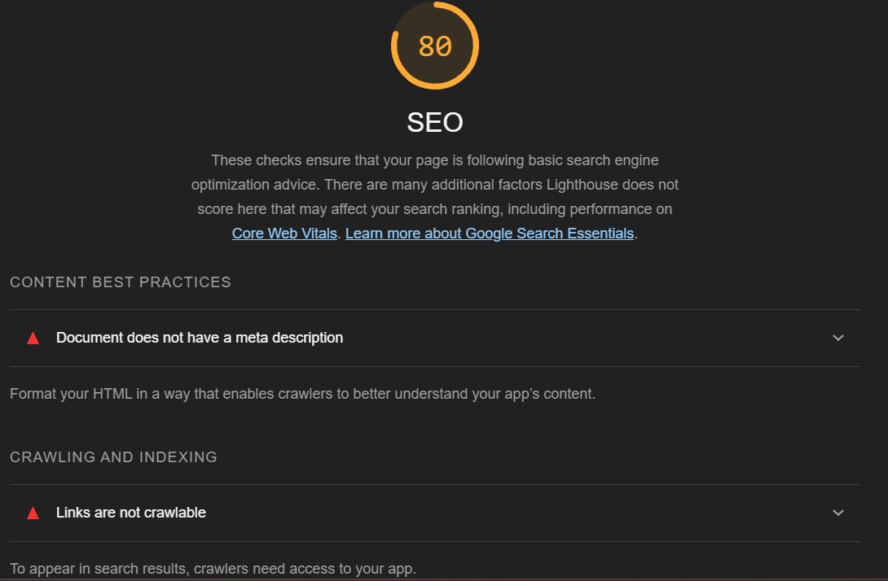

Analyse av nøkkelord
Ved hjelp av Google Trends, ble følgende nøkkelord funnet:
- "damesko" / "dame sko"
- "sko herre"
- "hoka" / "hoka sko"
- "nike" / "nike sko"
- "vintersko" / "vinter sko"
- "boots" / "boots sko"
- "adidas" / "adidas sko"
Jeg valgte disse nøkkelordene fordi de var blant de mest populære, samt fordi de er med på å representere det brede utvalget av 'vanlige' sko som Choose.no selger.
Til tross for at ikke alle nøkkelordene er grammatisk korrekte, er det slik mange skriver de, og derfor bør jeg ta med nøkkelordene som de er, grammatisk korrekte eller ikke. Dette er for å nå ut til flest mulig mennesker.
Analyse av SEO
Ved hjelp av lighthouse har jeg gjort analyser av SEO av de tre sidene mine. Her er resultatet:
SEO Index Mobil
SEO-score

Etter en analyse gjennom lighthouse, fikk index-filen min en score på 80.
Content best practices

Under 'Content Best Practices' kom lighthouse frem til at jeg bør ha en beskrivelse i meta som beskriver dokumentet.
Crawling and indexing
Under 'Crawling and indexing' refererer Lighthouse til linker som ikke kan crawles. Under viser den bilder av listepunktene mine i footer nav, og kategoriknappene i navigasjonsbaren øverst på siden. Her regner jeg med at Lighthouse vil at jeg skal legge til lenker under disse listepunktene.
Mobile friendly
Under 'Mobile friendly' forteller Lighthouse meg at enkelte knapper på siden er 67% av størrelsen de egentlig burde være. Knappene mine nå kan være vanskelige å treffe på mobil. Dette kan jeg nok løse ved å øke paddingen på knappene.
SEO Ordreoversikt Mobil
SEO-score
Etter en analyse gjennom lighthouse, fikk ordreoversikt-filen min en score på 78.
Content best practices, crawling and indexing, mobile friendly
Under 'content best practices' og 'crawling and indexing' er resultatene de samme som i Index-filen. Men mobilvennligheten ser ut til å være verre her, med knapper på kun 40% av anbefalt størrelse.
SEO Produktside Mobil
SEO-score, content best practices, crawling and indexing
Produktsiden får samme score som ordreoversikten. 'Content best practices' og 'crawling and indexing' får også samme resultat, og det er navigasjonen i footer som går igjen.
Mobile friendly
Under 'mobile friendly' får jeg vite at knappene mine kun er 36% av anbefalt størrelse. Dette gjør nok siden veldig vanskelig å navigere på mobil, så det er noe jeg må endre på.
SEO Index Desktop
SEO-score, content best practices, crawling and indexing
SEO får samme score på desktop som på mobil. Jeg får samme advarsler her som på mobil, hvor dokumentet ikke har en metabeskrivelse, og at linkene i footer og kategoriknappene ikke er 'crawlable'.
SEO Ordreoversikt Desktop
SEO-score, content best practices, crawling and indexing
Analyseresultatet av ordreoversikten på desktop ser helt likt ut som analyseresultatet av forsiden (index) på desktop.
SEO Produktside Desktop
SEO-score, content best practices, crawling and indexing
Analyseresultatet av produktsiden på desktop ser igjen helt lik ut som analyseresultatet av ordreoversikten på desktop.
Analyse av tilgjengelighet(UU) gjennom Webaim
UU-analyse av hjemmeside
Sammendraget av UU-analysen forteller følgende:
- 1 error: Mangler label på form (søkefeltet)
- 3 contrast errors: Veldig lav kontrast i navigasjon i footer, fordi linkene blir lilla når man har trykket på dem.
- 14 alerts: 2 alerts hvor jeg burde hatt heading. 12 alerts hvor flere elementer lenker til den samme siden. Dette er produktkortene som lenker til produktsiden.
- 15 features: Jeg har 13 produktkort med alt-tekst. Jeg har form label på epost-registreringen. Jeg har valgt dokumentspråk.
- 24 strukturelle elementer: Jeg har 24 elementer for stuktur (h1, h2, h3 osv., lister, header, nav, main osv.)
UU-analyse av ordreoversikt
Sammendraget av UU-analysen forteller følgende:
- 1 error: Mangler fremdeles label på form(søkefelt) i nav-baren
- 3 contrast errors: Veldig lav kontrast i navigasjon i footer, fordi linkene blir lilla når man har trykket på dem.
- 5 alerts: Mangler h1, 3 steder hvor jeg kunne brukt heading, lenken til hjemmesiden i brødsmulelisten er 'redundant'. Sannsynligvis fordi logoen også linker til hjemmesiden, så hjem-knappen anses som ubrukelig.
UU-analyse av produktside
Sammendraget av UU-analysen forteller følgende:
- 1 error: Igjen, mangler form label i søkefelt.
- 3 contrast errors: Igjen, veldig lav kontrast i footer når linkene allerede er brukt.
- 8 alerts: Mangler h1, 6 steder jeg burde brukt heading, hjem-lenken i brødsmulelisten er 'redundant'.